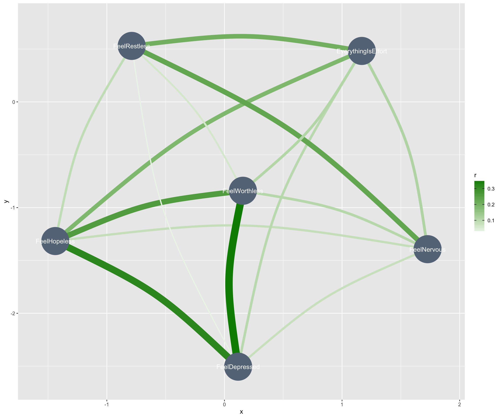

# you might need to run this code
#easystats::install_easystats_latest()
# read data
nz_0 <- readr::read_csv2(url("https://raw.githubusercontent.com/go-bayes/psych-447/main/data/nz/nz.csv"))
# to relevel kessler 6 variables
f<-c("None Of The Time","A Little Of The Time","Some Of The Time", "Most Of The Time", "All Of The Time")
# get data into shape
nz <- nz_0 %>%
dplyr::mutate_if(is.character, factor) %>%
select(
-c(
SWB.Kessler01,
SWB.Kessler02,
SWB.Kessler03,
SWB.Kessler04,
SWB.Kessler05,
SWB.Kessler06
)
) %>%
dplyr::mutate(Wave = as.factor(Wave)) %>%
mutate(FeelHopeless = forcats::fct_relevel(FeelHopeless, f)) %>%
mutate(FeelDepressed = forcats::fct_relevel(FeelDepressed, f)) %>%
mutate(FeelRestless = forcats::fct_relevel(FeelRestless, f)) %>%
mutate(EverythingIsEffort = forcats::fct_relevel(EverythingIsEffort, f)) %>%
mutate(FeelWorthless = forcats::fct_relevel(FeelWorthless, f)) %>%
mutate(FeelNervous = forcats::fct_relevel(FeelNervous, f)) %>%
dplyr::mutate(Wave = as.factor(Wave)) %>%
dplyr::mutate(date = make_date(year = 2009, month = 6, day = 30) + TSCORE)
Make a new dataframe from the nz dataframe. Call it df
df <- nz
Make all the hours variables into integers
This would be the quick way:
df <-df %>%
dplyr::mutate(across(starts_with("Hours"), as.integer))
But more likely theyll do it by hand, which is fine:
df<- df%>%
mutate(Hours.Exercise = as.integer(Hours.Exercise),
Hours.Internet = as.integer(Hours.Internet))
And so on
Create a new indicator that standardises the Pol.Orient variable, create a new indicator that centers the Pol.Orient variable, create a new indicator that centres the Age variable in decade-long units. Do this in a single piped workflow.
Print the head of the data frame so that we can see your work
Select Hour.Exercise and filter Wave 2019.
Note that this wont. We need to filter first because otherwise there would be no Wave column to select!
What are the maximum number of responses for a single day in 2018 and the maximum number of responses for a single day in 2019?
This is how Id do it:
# A tibble: 2 x 3
# Groups: Wave [2]
date Wave n
<date> <fct> <int>
1 2018-06-21 2018 112
2 2019-12-03 2019 54Heres a longer approach:
# 2018 take the first
nz %>%
group_by(date, Wave) %>%
count() %>%
filter(Wave == 2018) %>%
arrange(desc(n)) %>%
glimpse()
Rows: 312
Columns: 3
Groups: date, Wave [312]
$ date <date> 2018-06-21, 2018-06-22, 2018-06-24, 2018-06-
$ Wave <fct> 2018, 2018, 2018, 2018, 2018, 2018, 2018, 201
$ n <int> 112, 93, 80, 67, 59, 58, 52, 44, 44, 34, 27,
# 2019 take the first
nz %>%
group_by(date, Wave) %>%
count() %>%
filter(Wave == 2019) %>%
arrange(desc(n))%>%
glimpse()
Rows: 298
Columns: 3
Groups: date, Wave [298]
$ date <date> 2019-12-03, 2019-10-04, 2019-12-02, 2019-12-
$ Wave <fct> 2019, 2019, 2019, 2019, 2019, 2019, 2019, 201
$ n <int> 54, 47, 46, 46, 45, 44, 43, 39, 39, 38, 38, 3How many days are there between the date with the highest number of responses and the date with the second highest number of responses?
Bonus: Calculate difference between the number of responses on the highest response date and second highest response date.
Here is an approach:
ts<-nz %>%
group_by(date)%>%
count() %>%
arrange(desc(n)) %>%
as_tibble() %>%
slice(c(1:2)) %>%
mutate(diff_days = date - lag(date),
diff_n = n - lag(n))
ts
# A tibble: 2 x 4
date n diff_days diff_n
<date> <int> <drtn> <int>
1 2018-06-21 112 NA days NA
2 2018-06-22 93 1 days -19Suppose you were born on Dec 25, 1995 at 5.02:22 am Calculate your age in months on March 20,2021, at 1:22:04pm. (Hint use the lubridate package. Look up the interval function).
library(lubridate)
alive <- lubridate::interval(ymd_hms("1995-12-25 05:02:22"),
ymd_hms("2021-03-21 13:22:04"))
time_length(alive, "months")
[1] 302.8695The Religion.Church variable contains responses to the question: How many times each month do you attend church or religious service?
Create factor with the following three levels:
Make sure to re-level the factor so that the ordinal ranking moves from lowest to highest.
nz %>%
dplyr::select(Religion.Church) %>%
dplyr::mutate(church_attendance_cats = as.factor(ifelse(
Religion.Church == 0,
"zero",
ifelse(Religion.Church < 4, "less_4", "gr_4")
))) %>%
group_by(church_attendance_cats) %>%
count()
# A tibble: 4 x 2
# Groups: church_attendance_cats [4]
church_attendance_cats n
<fct> <int>
1 gr_4 363
2 less_4 288
3 zero 3366
4 <NA> 109Using methods described in lecture 4, create a table for average hours of sleep by month in the nz dataset
library(kableExtra)
tabnz <- nz %>%
select(Id, date, HLTH.SleepHours) %>%
mutate(month = month(date, label = TRUE)) %>%
group_by(month) %>%
summarise(
average_sleep = mean(HLTH.SleepHours, na.rm = TRUE),
sd_sleep = sd(HLTH.SleepHours, na.rm = TRUE),
n = n()
)
tabnz %>%
kbl(caption = "Distress by month") %>%
kable_classic_2(c("striped", "hover"), full_width = TRUE)
| month | average_sleep | sd_sleep | n |
|---|---|---|---|
| Jan | 6.810909 | 1.1739898 | 265 |
| Feb | 6.666667 | 0.9537048 | 174 |
| Mar | 6.792891 | 1.1216895 | 220 |
| Apr | 7.279487 | 1.1232327 | 81 |
| May | 7.064935 | 1.0922895 | 81 |
| Jun | 6.927352 | 1.0601600 | 725 |
| Jul | 6.957453 | 1.1072359 | 507 |
| Aug | 6.976087 | 1.0035276 | 240 |
| Sep | 6.666667 | 1.0817994 | 100 |
| Oct | 6.912844 | 1.0240630 | 772 |
| Nov | 6.940741 | 1.2160484 | 307 |
| Dec | 6.872973 | 1.0420464 | 654 |
Graph the average hours of sleep by month including 95% confidence intervals
Briefly explain why some intervals are wider than others.
nz %>%
select(Id, date, HLTH.SleepHours) %>%
mutate(month = month(date, label = TRUE)) %>%
group_by(month) %>%
summarise(
mn_sh = mean(HLTH.SleepHours, na.rm = TRUE),
sd_sh = sd(HLTH.SleepHours, na.rm = TRUE),
n_sh = n()
) %>%
mutate(
se_sh = sd_sh / sqrt(n_sh),
lw_ci = mn_sh - qt(1 - (0.05 / 2), n_sh - 1) * se_sh ,
up_ci = mn_sh + qt(1 - (0.05 / 2), n_sh - 1) * se_sh
) %>%
ggplot(., aes(x = month, y = mn_sh , colour = mn_sh)) +
geom_errorbar(aes(ymin = lw_ci, ymax = up_ci), width = .1) +
geom_point(size = 3) +
scale_y_continuous(limits = c(0, 8)) +
theme_classic() + scale_fill_viridis_d()
Some intervals are wider than others because the number of responses by month varies, and a confidence interval divides by the number of cases.
Here we see high standard errors of the mean with low ns
We can graph the year-wise differences, focusing on April:
Created a correlation graph for the items in the Kessler 6 scale
These are FeelHopeless,FeelDepressed,FeelRestless,EverythingIsEffort,FeelWorthless,FeelNervous
Hint you must transform the factors into integers.
What do you find most interesting about this plot? Explain.
k6 <- nz %>%
select(
FeelHopeless,
FeelDepressed,
FeelRestless,
EverythingIsEffort,
FeelWorthless,
FeelNervous,
Id
) %>%
mutate_all(., as.numeric) %>%
mutate(Id = as.factor(Id))# make numeric for correlation plot
k6 %>%
correlation::correlation(partial = FALSE, multilevel = TRUE) %>%
plot() +
theme_gray()
I find it interesting that Nervousness and Restlessness are not correlated, or inversely correlated with Depression.
Setting the correlations to partial does not destroy this effect.
k6 %>%
correlation::correlation(partial = TRUE, multilevel = TRUE) %>%
plot() +
theme_gray()

papaja reportInclude your your name, affiliation, contributors and r packages used in your analysis
PatchworkUse the patchwork library to create a figure with two plots on top of each other.
library(patchwork)
library(ggplot2)
p1 <-
qplot(mtcars$cyl, geom = "histogram") + labs(title = "this plot") + xlab("mt cycle")
p2 <-
qplot(mtcars$disp, geom = "histogram") + labs(title = "that plot")
p1 / p2 + plot_annotation(title = "my title", tag_levels = 'a') + xlab("mt cycle") + plot_layout(guides = 'collect')
Figure 1: